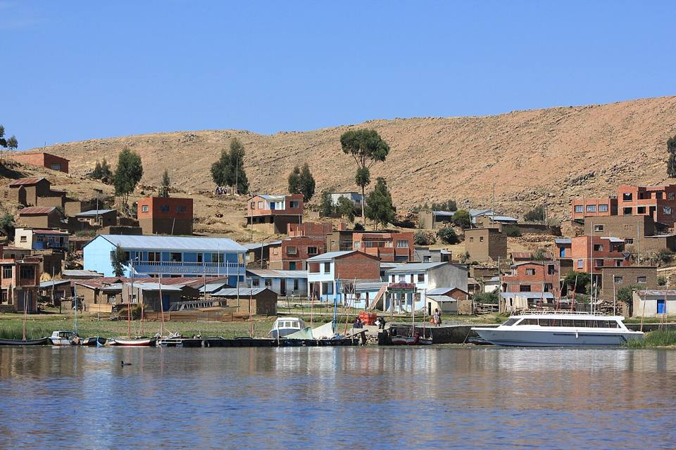
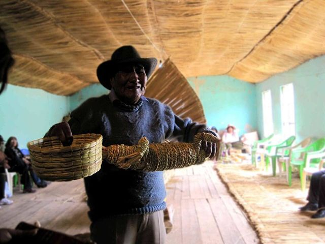

Île de Suriki
Département de La Paz · Culture et histoire

Sur la petite île de Suriki, dans le Lago Menor, les familles aymaras construisent depuis des générations des bateaux en totora. Des artisans de l'île ont aidé l'explorateur Thor Heyerdahl à construire le Ra II, qui a traversé l'Atlantique en 1970. Un petit musée et des ateliers racontent cette histoire étonnante.
3 815 maltitude
0 à 1 joursur place
Haute altitude. Au-dessus de 3 500 m, le mal des montagnes (soroche) est fréquent. Arrivez progressivement, buvez beaucoup et ralentissez le premier jour.
À faire
- Ateliers de bateaux en totora
- Petit musée de l'expédition Ra II
- Tour de l'île et vue sur la cordillère
À goûter
- TruiteTruite du lac Titicaca ou des rivières de la Cordillère, frite ou grillée, avec riz, frites et salade. On la mange sur la plage de Copacabana et dans les petits restaurants des villages de montagne.
Conseil. En barque depuis Huatajata ou les villages voisins. Se combine avec Pariti.
Comment aller à Suriki
Huatajata Bateau · environ 30 min
Barque à moteur depuis Huatajata.
Photos de Île de Suriki


Autres lieux de la région
 Copacabana (lac Titicaca)Petite ville au bord du lac Titicaca, porte d'entrée vers l'Isla del Sol.
Copacabana (lac Titicaca)Petite ville au bord du lac Titicaca, porte d'entrée vers l'Isla del Sol. Isla del SolÎle sacrée des Incas : sentiers, ruines et vues sur la Cordillère Royale.
Isla del SolÎle sacrée des Incas : sentiers, ruines et vues sur la Cordillère Royale. Isla de la LunaPetite île voisine avec le temple des Vierges du Soleil (Iñak Uyu).
Isla de la LunaPetite île voisine avec le temple des Vierges du Soleil (Iñak Uyu). HuatajataVillage du lac Titicaca, berceau des bateaux de roseau (totora).
HuatajataVillage du lac Titicaca, berceau des bateaux de roseau (totora). Isla ParitiPetite île du Titicaca et son musée de céramiques de Tiwanaku, trouvées sur place.
Isla ParitiPetite île du Titicaca et son musée de céramiques de Tiwanaku, trouvées sur place.